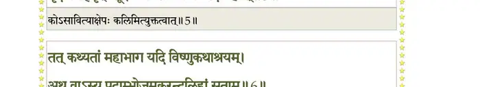
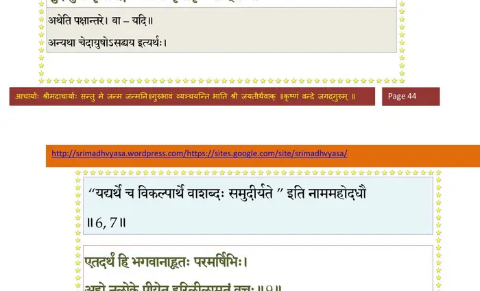
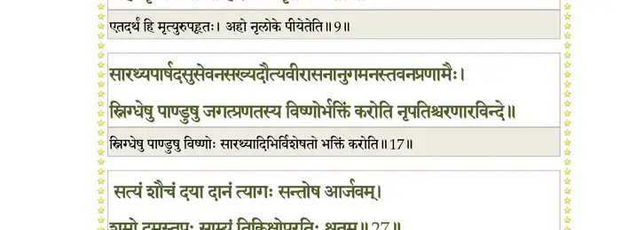
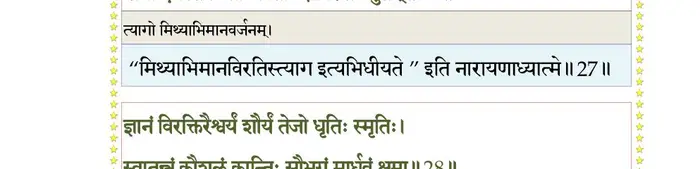
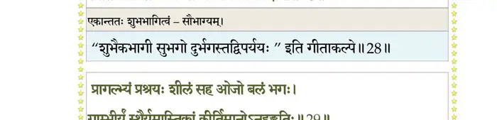
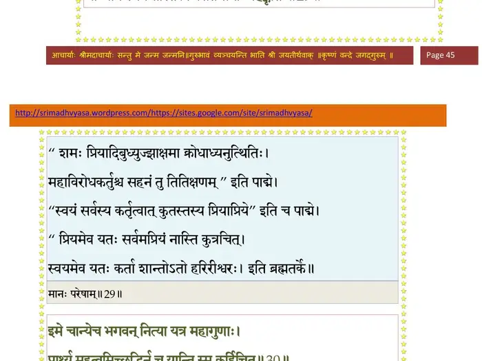
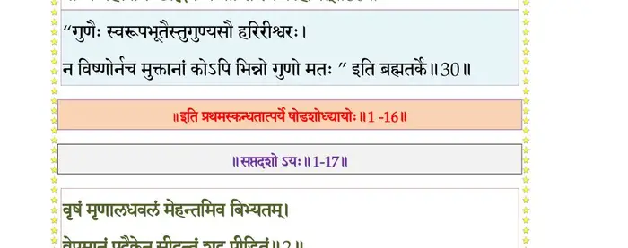

स्कन्ध 1 · अध्याय 16
श्लोक २
सूत उवाच–
ततः परीक्षिद् द्विजवर्यशिक्षया महीं महाभागवतः शशास ह ।
यथा हि सूत्यामभिजातकोविदाः समादिशन् विप्र महद्गुणांस्तथा।।१
स उत्तरस्य तनयामुपयेम इरावतीम् ।
जनमेजयादींश्चतुरस्तस्यामुत्पादयत्सुतान्।। २ ।।
ततः परीक्षिद् द्विजवर्यशिक्षया महीं महाभागवतः शशास ह ।
यथा हि सूत्यामभिजातकोविदाः समादिशन् विप्र महद्गुणांस्तथा।।१
स उत्तरस्य तनयामुपयेम इरावतीम् ।
जनमेजयादींश्चतुरस्तस्यामुत्पादयत्सुतान्।। २ ।।
श्लोक ३
आजहाराश्वमेधांस्त्रीन् गङ्गायां भूरिदक्षिणान् ।
शारद्वतं गुरुं कृत्वा देवा यत्राक्षिगोचराः।। ३ ।।
शारद्वतं गुरुं कृत्वा देवा यत्राक्षिगोचराः।। ३ ।।
श्लोक ४
निजग्राहौजसा धीरः कलिं दिग्विजये क्वचित् ।
नृपलिङ्गधरं शूद्रं घ्नन्तं गोमिथुनं पदा।। ४ ।।
नृपलिङ्गधरं शूद्रं घ्नन्तं गोमिथुनं पदा।। ४ ।।
श्लोक ५
शौनक उवाच–
कस्य हेतोर्निजग्राह कलिं दिग्विजये नृपः ।
नृदेवचिह्नधृक् शूद्रः कोऽसौ गां यः पदाऽहनत्।। ५ ।।
कस्य हेतोर्निजग्राह कलिं दिग्विजये नृपः ।
नृदेवचिह्नधृक् शूद्रः कोऽसौ गां यः पदाऽहनत्।। ५ ।।
भागवततात्पर्यनिर्णय

श्लोक ६
तत्कथ्यतां महाभाग यदि विष्णुकथाश्रयम् ।
अथवाऽस्य पदाम्भोजमकरन्दलिहां सताम्।। ६ ।।
अथवाऽस्य पदाम्भोजमकरन्दलिहां सताम्।। ६ ।।
भागवततात्पर्यनिर्णय
श्लोक ७
किमन्यैरसदालापैरायुषो यदसव्द्ययः ।
क्षुद्रायुषां नृणामङ्ग मर्त्यानां मृतिमिच्छताम्।। ७ ।।
क्षुद्रायुषां नृणामङ्ग मर्त्यानां मृतिमिच्छताम्।। ७ ।।
भागवततात्पर्यनिर्णय

श्लोक ८
इहोपहूतो भगवान्मृत्युः शामित्रकर्मणि ।
न कश्चिन्म्रियते तावद्यावदास्त इहान्तकः।। ८ ।।
न कश्चिन्म्रियते तावद्यावदास्त इहान्तकः।। ८ ।।
श्लोक ९
एतदर्थं हि भगवानाहूतः परमर्षिभिः ।
अहो नृलोके पीयेत हरिलीलामृतं वचः।। ९ ।।
अहो नृलोके पीयेत हरिलीलामृतं वचः।। ९ ।।
भागवततात्पर्यनिर्णय

श्लोक १०
मन्दस्य मन्दप्रज्ञस्य प्रायो मन्दायुषश्च वै ।
निद्रया ह्रियते नक्तं दिवा चाप्यर्थकर्मभिः।। १० ।।
निद्रया ह्रियते नक्तं दिवा चाप्यर्थकर्मभिः।। १० ।।
श्लोक ११
सूत उवाच–
यदा परीक्षित्कुरुजाङ्गले वसन् कलिं प्रविष्टं निजचक्रवर्तिते ।
निशम्य वार्तामनतिप्रियां ततः शरासनं संयुगरोचिराददे।। ११ ।।
यदा परीक्षित्कुरुजाङ्गले वसन् कलिं प्रविष्टं निजचक्रवर्तिते ।
निशम्य वार्तामनतिप्रियां ततः शरासनं संयुगरोचिराददे।। ११ ।।
श्लोक १२
स्वलङ्कृतं श्यामतुरङ्गयोजितं रथं मृगेन्द्रध्वजमास्थितः पुरात् ।
वृतो रथाश्वद्विपपत्तियुक्तया स्वसेनया दिग्विजयाय निर्गतः।। १२ ।।
वृतो रथाश्वद्विपपत्तियुक्तया स्वसेनया दिग्विजयाय निर्गतः।। १२ ।।
श्लोक १३
भद्राश्वं केतुमालञ्च भारतञ्चोत्तरान् कुरून् ।
किम्पुरुषादीनि सर्वाणि विजित्य जगृहे बलिम्।। १३ ।।
किम्पुरुषादीनि सर्वाणि विजित्य जगृहे बलिम्।। १३ ।।
श्लोक १४
तत्र तत्रोपशृृण्वानः स्वपूर्वेषां महात्मनाम् ।
प्रगीयमानं पुरतः कृष्णमाहात्म्यसूच(कम्)नम्।। १४ ।।
प्रगीयमानं पुरतः कृष्णमाहात्म्यसूच(कम्)नम्।। १४ ।।
श्लोक १५
आत्मानञ्च परित्रातमश्वत्थाम्नोऽस्त्रतेजसः ।
स्नेहञ्च वृष्णिपार्थानां तेषां भक्तिञ्च केशवे।। १५ ।।
स्नेहञ्च वृष्णिपार्थानां तेषां भक्तिञ्च केशवे।। १५ ।।
श्लोक १६
तेभ्यः परमसन्तुष्टः प्रीत्युज्जृम्भितलोचनः ।
महाधनानि वासांसि ददौ हारान्महामनाः।। १६ ।।
महाधनानि वासांसि ददौ हारान्महामनाः।। १६ ।।
श्लोक १७
सारथ्यपारषदसेवनसख्यदौत्यवीरासनानुगमनस्तवनप्रणामैः ।
स्निग्धेषु पाण्डुषु जगत्प्रणतस्य विष्णोः भक्तिं करोति नृपतिश्चरणारविन्दे ।। १७ ।।
स्निग्धेषु पाण्डुषु जगत्प्रणतस्य विष्णोः भक्तिं करोति नृपतिश्चरणारविन्दे ।। १७ ।।
श्लोक १८
तस्यैवं वर्तमानस्य पूर्वेषां वृत्तमन्वहम् ।
नातिदूरे किलाश्चर्यं यदासीत्तन्निबोध मे।। १८ ।।
नातिदूरे किलाश्चर्यं यदासीत्तन्निबोध मे।। १८ ।।
श्लोक १९
धर्मः पदैकेन चरन् विच्छायामुपलभ्य गाम् ।
पृच्छति स्माश्रुवदनां विवत्सामिव मातरम्।। १९ ।।
पृच्छति स्माश्रुवदनां विवत्सामिव मातरम्।। १९ ।।
श्लोक २०
धर्म उवाच–
कच्चिद्भद्रेऽनामयमात्मनस्ते विच्छायाऽसि म्लायता यन्मुखेन ।
आलक्षये भवतीमन्तराधिं दूरे बन्धुं कञ्चन शोचसीव।। २० ।।
कच्चिद्भद्रेऽनामयमात्मनस्ते विच्छायाऽसि म्लायता यन्मुखेन ।
आलक्षये भवतीमन्तराधिं दूरे बन्धुं कञ्चन शोचसीव।। २० ।।
श्लोक २१
पादैर्न्यूनं शोचसि मैकपादमुतात्मानं वृषलैर्भोक्ष्यमाणम् ।
अथो सुरादीन् हृतयज्ञभागान् प्रजा उत स्विन्मघवत्यवर्षति।।२१।।
अथो सुरादीन् हृतयज्ञभागान् प्रजा उत स्विन्मघवत्यवर्षति।।२१।।
श्लोक २२
अरक्ष्यमाणा स्त्रिय उर्वि बालाञ्छोचस्यथो पुरुषादैरिवार्तान् ।
वाचं देवीं ब्रह्मकुले कुकर्मण्यब्रह्मण्ये राजकुले कुलाग््रयाम्।। २२ ।।
वाचं देवीं ब्रह्मकुले कुकर्मण्यब्रह्मण्ये राजकुले कुलाग््रयाम्।। २२ ।।
श्लोक २३
किं क्षत्रबन्धून्कलिनोपसृष्टान् राष्ट्राणि वा तैरवरोपितानि ।
इतस्ततो वाऽशनपानवासस्नानव्यवायोत्सुकजीवलोकम्।। २३ ।।
इतस्ततो वाऽशनपानवासस्नानव्यवायोत्सुकजीवलोकम्।। २३ ।।
श्लोक २५
१यद्वाऽम्बते भूरिभरावतारकृतावतारस्य हरेर्धरित्रि ।
अन्तर्हितस्य स्मरती विसृष्टा कर्माणि २निर्वाणविलम्बितानि।। २४
इदं ममाचक्ष्व तवाधिमूलं वसुन्धरे येन विकर्शिताऽसि ।
कालेन वा ते वलिनाऽबलीढं सुरार्चितं किं प्रभुणाऽद्य सौभगम्।। २५ ।।
अन्तर्हितस्य स्मरती विसृष्टा कर्माणि २निर्वाणविलम्बितानि।। २४
इदं ममाचक्ष्व तवाधिमूलं वसुन्धरे येन विकर्शिताऽसि ।
कालेन वा ते वलिनाऽबलीढं सुरार्चितं किं प्रभुणाऽद्य सौभगम्।। २५ ।।
श्लोक २६
धरोवाच–
भवान् हि वेद तत्सर्वं यन्मां धर्मानुपृच्छसि ।
चतुर्भिः वर्तसे येन पादैर्लोकसुखावहैः।। २६ ।।
भवान् हि वेद तत्सर्वं यन्मां धर्मानुपृच्छसि ।
चतुर्भिः वर्तसे येन पादैर्लोकसुखावहैः।। २६ ।।
श्लोक २७
सत्यं शौचं दया दानं त्यागः सन्तोष आर्जवम् ।
शमो दमः तपः साम्यं तितिक्षोपरतिः श्रुतम्।। २७ ।।
शमो दमः तपः साम्यं तितिक्षोपरतिः श्रुतम्।। २७ ।।
भागवततात्पर्यनिर्णय

श्लोक २८
ज्ञानं विरक्तिरैश्वर्यं शौर्यं तेजो धृतिः स्मृतिः ।
स्वातन्त्र्यं कौशलं कान्तिः सौभगं मार्दवं क्षमा।। २८ ।।
स्वातन्त्र्यं कौशलं कान्तिः सौभगं मार्दवं क्षमा।। २८ ।।
भागवततात्पर्यनिर्णय

श्लोक २९
प्रागल्भ्यं प्रश्रयः शीलं सह ओजो बलं भगः ।
गाम्भीर्यं स्थैर्यमास्तिक्यं कीर्तिर्मानोऽनहंकृतिः।। २९ ।।
गाम्भीर्यं स्थैर्यमास्तिक्यं कीर्तिर्मानोऽनहंकृतिः।। २९ ।।
भागवततात्पर्यनिर्णय

श्लोक ३०
इमे चान्ये च भगवन्नित्या यत्र महागुणाः ।
प्रार्थ्या महत्वमिच्छद्भिः न च यान्ति स्म कर्हिचित्।। ३० ।।
प्रार्थ्या महत्वमिच्छद्भिः न च यान्ति स्म कर्हिचित्।। ३० ।।
भागवततात्पर्यनिर्णय

श्लोक ३१
तेनाहं गुणपात्रेण श्रीनिवासेन साम्प्रतम् ।
शोचामि रहितं लोकं पाप्मना कलिनेक्षितम्।। ३१ ।।
शोचामि रहितं लोकं पाप्मना कलिनेक्षितम्।। ३१ ।।
श्लोक ३२
आत्मानञ्चानुशोचामि भवन्तञ्चामरोत्तम ।
देवान्नृषीन् पितॄन् साधून् सर्वान् वर्णांस्तथाश्रमान्।। ३२ ।।
देवान्नृषीन् पितॄन् साधून् सर्वान् वर्णांस्तथाश्रमान्।। ३२ ।।
श्लोक ३३
ब्रह्मादयो बहुतिथं यदपाङ्गमोक्षकामा यथोक्तविधिना भगवत्प्रपन्नाः ।
सा श्रीः स्ववासमरविन्दवनं विहाय यत्पादसौभगमलं भजतेऽनुरक्ता।। ३३ ।।
सा श्रीः स्ववासमरविन्दवनं विहाय यत्पादसौभगमलं भजतेऽनुरक्ता।। ३३ ।।
श्लोक ३४
तस्याहमब्जकुलिशाङ्कुशकेतुकेतैः श्रीमत्पदैर्भगवतः समलङ्कृताङ्गी ।
त्रीनत्यरोचमुपलब्धतपोविभूतिर्लोकान् स मां व्यसृजदुत्स्मयतीं तदन्ते ।। ३४ ।।
त्रीनत्यरोचमुपलब्धतपोविभूतिर्लोकान् स मां व्यसृजदुत्स्मयतीं तदन्ते ।। ३४ ।।
श्लोक ३५
यो वै ममातिभरमासुरवंशराज्ञामक्षौहिणीशतमपानुददात्मतन्त्रः ।
त्वां दुःस्थमूनपदमात्मनि पौरुषेण सम्पादयन्यदुषु रम्यमबिभ्रदङ्गम्।। ३५ ।।
त्वां दुःस्थमूनपदमात्मनि पौरुषेण सम्पादयन्यदुषु रम्यमबिभ्रदङ्गम्।। ३५ ।।
श्लोक ३६
का वा सहेत विरहं पुरुषोत्तमस्य प्रेमावलोकरुचिरस्मितवल्गुजल्पैः ।
स्थैर्यं समानमहरन्मधुमानिनीनां रोमोत्सवो मम यदङ्घ्रिविटङ्कितायाः ।। ३६ ।।
स्थैर्यं समानमहरन्मधुमानिनीनां रोमोत्सवो मम यदङ्घ्रिविटङ्कितायाः ।। ३६ ।।
श्लोक ३७
सूत उवाच–
तयोरेवं कथयतोः पृथिवीधर्मयोस्तदा ।
परीक्षिन्नाम राजर्षिः प्राप्तः प्राचीं सरस्वतीम्।। ३७ ।।
तयोरेवं कथयतोः पृथिवीधर्मयोस्तदा ।
परीक्षिन्नाम राजर्षिः प्राप्तः प्राचीं सरस्वतीम्।। ३७ ।।
।। इति श्रीमद्भागवते प्रथमस्कन्धे षोडशोऽध्यायः ।।